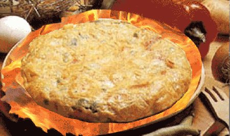

Receta de la tortilla de patatas
Descargar el pdf con los ingredientes Ingredientes Tortilla de patatas

INGREDIENTES:
- 4 patatas medianas
- 4 o 5 huevos
- 1 cebolla mediana
- ¼ l de aceite de oliva
- Sal al gusto
- -Comenzamos con la tarea más larga, la de caramelizar la cebolla que nos llevará unos 30 minutos. Para
ello,
pelamos la cebolla y la cortamos en juliana.
- -Después la ponemos en una sartén a fuego muy lento y dejamos que se haga muy despacio, removiendo de vez en cuando.
- -No nos interesa que se dore la cebolla sino que se vaya pochando muy despacio.
- -Aquí podéis ver con detalle todos los trucos para caramelizar la cebolla en sus propios azúcares
naturales.
- -Mientras la cebolla se hace, pelamos las patatas y las cortamos en rodajas finas, procurando que todas
ellas sean de tamaño uniforme.
- -Las dejamos en agua durante 15 minutos y ponemos una sartén con aceite de oliva abundante en el fuego
Sin dar tiempo a que el aceite se caliente, añadimos las patatas y dejamos que se vayan friendo muy
despacio, partiendo de un aceite casi en frío.
- -Así conseguimos que las patatas se confiten en lugar de dorarse. De todas formas, cuando lleven unos
diez minutos y hayamos removido de vez en cuando, podemos subir
el fuego para conseguir que algunas de las patatas queden más tostaditas, originando así contrastes en
el plato final.
- -Sacamos las patatas y las escurrimos bien del aceite y las ponemos en un bol grande. Escurrimos la
cebolla cuando esté en su punto, y la ponemo
s sobre las patatas.
- -Batimos los huevos y los añadimos al bol, removiendo con un tenedor para que se mezclen bien los tres
ingredientes.
- -Cuajamos la tortilla en una sartén con una cucharada de aceite durante unos tres o cuatro minutos y le
damos la vuelta.
- -Para ayudar a los que no sean muy duchos en esa operación, existen en el mercado sartenes dobles que
permiten dar la vuelta a la tortilla sin riesgo de que se nos derrame.